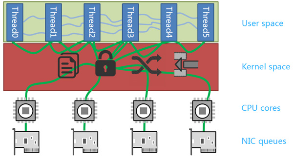
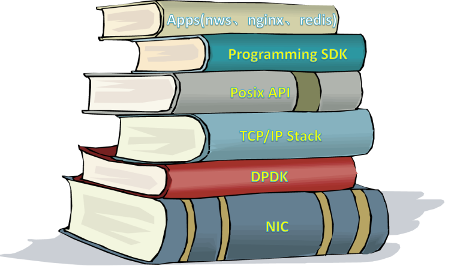
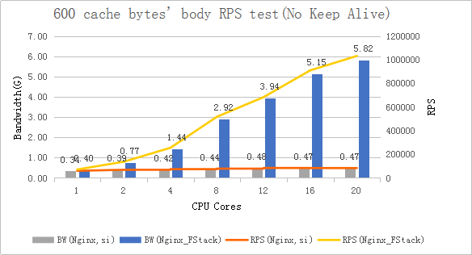

name: inverse layout: true class: center, middle, inverse --- #f-stack(Faster Than The Fastest) .footnote[sa-dev [yubo@xiaomi.com](mailto:yubo@xiaomi.com)] --- layout: false .left-column[ ## 简介 ] .right-column[ F-Stack is an open source network framework with high performance based on DPDK. With the rapid development of NIC, the poor performance of data packets processing with Linux kernel has become the bottleneck. However, the rapid development of the Internet needs high performance of network processing, kernel bypass has caught more and more attention. There are various similar technologies appear, such as DPDK, NETMAP and PF_RING. The main idea of kernel bypass is that Linux is only used to deal with control flow, all data streams are processed in user space. Therefore, kernel bypass can avoid performance bottlenecks caused by kernel packet copy, thread scheduling, system calls and interrupt. Furthermore, kernel bypass can achieve higher performance with multi optimizing methods. Within various techniques, DPDK has been widely used because of its more thorough isolation from kernel scheduling and active community support. F-Stack is an open source network framework with high performance based on DPDK， include an user space TCP/IP stack(port FreeBSD 11.0 stable), Posix API(Socket, Epoll, Kqueue), Progamming SDK(Coroutine) and some apps(Nginx, Redis) interface. - ] --- .left-column[ ## 简介 ## 特点 ] .right-column[ - Ultra high network performance which can achieve network card under full load, 10 million concurrent connection, 5 million RPS, 1 million CPS. - Transplant FreeBSD 11.01 user space stack, provides a complete stack function, cut a great amount of irrelevant features. Therefore greatly enhance the performance. - Support Nginx, Redis and other mature applications, service can easily use F-Stack With Multi-process architecture, easy to extend - Provide micro thread interface. Various applications with stateful app can easily use F-Stack to get high performance without processing complex asynchronous logic. - Provide Epoll/Kqueue interface that allow many kinds of applications easily use F-Stack ] --- .left-column[ ## 简介 ## 特点 ## 实现 ] .right-column[  - interrupt, NAPI, epoll/kqueue - 内核态用户态切换 - 数据拷贝(copy_to_user, copy_from_user) ] --- .left-column[ ## 简介 ## 特点 ## 实现 ] .right-column[ <img src="img/f_stack_2.png" alt="Drawing" width="100%" /> - Poll Mode Driver - mempool/ring - multi-process - hugepages (影响内存分页，逻辑地址 -> 线性地址) - NUMA system - RSS(Receive Side Scaling) 具备RSS队列的网卡，可以将不同的网络流根据 L3/L4 的地址 HASH 到分成不同的 RX 队列中 `rte_eth_rx_queue_setup()` - FDIR(Flow Director Filter) 可以将特定的数据流放入指定的 RX 队列 `rte_eth_dev_filter_ctrl()` ] --- .left-column[ ## 简介 ## 特点 ## 实现 ] .right-column[  - apps(Nginx, Redis) - libuinet/f-stack - FreeBSD(11.0 stable) - DPDK(librte_pmd_ixgbe/i40e/e1000) - user space - kernel space (uio) - hw ] --- .left-column[ ## 简介 ## 特点 ## 实现 ] .right-column[  ] --- .left-column[ ## 简介 ## 特点 ## 场景 ] .right-column[ - 网络I/O密集型应用（DNS，CDN，object storage） - 短连接，小报文 - 对延时要求较高的业务 ] --- ## TODO - NIC offload: checkksum(IP/TCP/UDP/SCTP), TSO, VLAN). - Zerocopy when send packet. - User space tools:syscontrol, iptables, tcpdump, HOOK(INPUT/OUTPUT/BYPASS), tc, etc. - Watchdog supportted. - SPDK supportted. - Python/PHP API supportted. - Encapsulate Cyptodev API（Intel QAT）. --- ## RESOURCES - [dpdk.org](http://dpdk.org) - [www.f-stack.org](http://www.f-stack.org/) - [Intel® Ethernet Flow Director](https://www.intel.com/content/www/us/en/ethernet-products/ethernet-flow-director-video.html) - [www.freebsd.org](https://www.freebsd.org) - [github.com/pkelsey/libuinet](https://github.com/pkelsey/libuinet) --- template: inverse ## Thank You .footnote[sa-dev [yubo@xiaomi.com](mailto:yubo@xiaomi.com)] [lvs]:http://www.linuxvirtualserver.org/ [dpdk_org]:http://dpdk.org [grog_guide]:http://dpdk.org/doc/guides/prog_guide [samples]:http://dpdk.org/doc/guides/sample_app_ug/index.html [dpvs_img]:https://yubo.github.io/doc/img/dpvs.svg [libubox]:https://github.com/yubo/libubox [dpvs]:https://github.com/yubo/bird/tree/dpvs